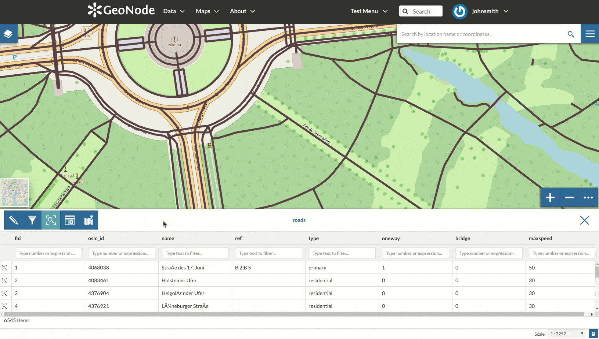

Layer Editing¶
Warning
Remember user can edit only the data of which you are the owner or assigned to your group staff, according the layer permissions.
The Editing Tools button in the the left side of the Layer Page (see Layer Information) opens a panel like the one shown in the picture below.
The Layer Editing panel
In that panel you can see many options grouped by four categories:
- Metadata
- Styles
- Thumbnail
- Layer
Setting the Layer Thumbnail¶
Set Layer Thumbnail
Layer Thumbnail saved confirmation message
Replacing the Layer¶
From the Layer Editing panel click on Replace to change the layer source dataset. You will be driven to the Replace Layer page in which Choose Files button allows you to select files from your disk.
Replace a Layer
Once the Charset selected the upload process can be triggered by clicking on Replace Layer. If no errors occur you will see a message like the one in the picture below.
Replace Layer success
We have replaced the roads dataset with the railways one. You can see the differences in the Layer Preview.

Result of the Layer Replacement
Editing the Layer Data¶
The Edit data button of the Layer Editing panel opens the Layer within a Map.
Editing the Layer Data
The Attribute Table panel of the Layer will automatically appear at the bottom of the Map. In that panel all the features are listed. For each feature you can zoom to its extent by clicking on the corresponding magnifying glass icon  at the beginning of the row, you can also observe which values the feature assumes for each attribute.
at the beginning of the row, you can also observe which values the feature assumes for each attribute.
Click the Edit Mode button to start an editing session.
{kind=link}
Now you can:
Add new Features
Through the Add New Feature button it is possible to set up a new feature for your layer. Fill the attributes fields and click
 to save your change.
Your new feature doesn’t have a shape yet, click on to draw its shape directly on the Map then click on to save it.
to save your change.
Your new feature doesn’t have a shape yet, click on to draw its shape directly on the Map then click on to save it.Note
When your new feature has a multi-vertex shape you have to double-click the last vertex to finish the drawing.
{kind=link}
{kind=link}

Add new Features to Layer
Delete Features
If you want to delete a feature you have to select it on the Attribute Table and click on .
{kind=link}

Delete a Feature
Change the Feature Shape
You can edit the shape of an existing geometry dragging its vertices with the mouse. A blue circle lets you know what vertex you are moving.

Feature Shape Editing - Change the existing shape
Features can have multipart shapes. You can add parts to the shape when editing it.
Feature Shape Editing - Add parts to the existing shape
Change the Feature Attributes
When you are in Edit Mode you can also edit the attributes values changing them directly in the corresponding text fields.

Feature Attributes Editing
Once you have finished you can end the Editing Session by clicking on the  button.
button.